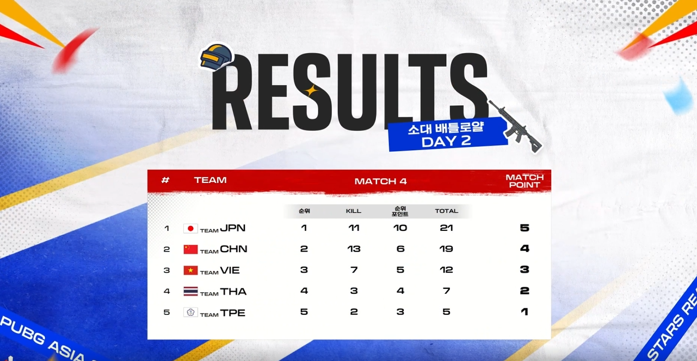
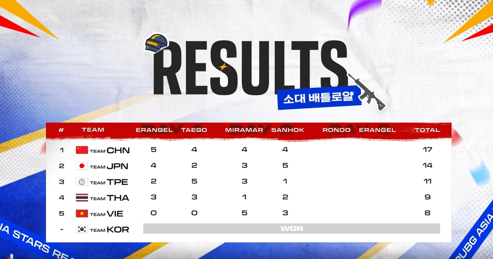
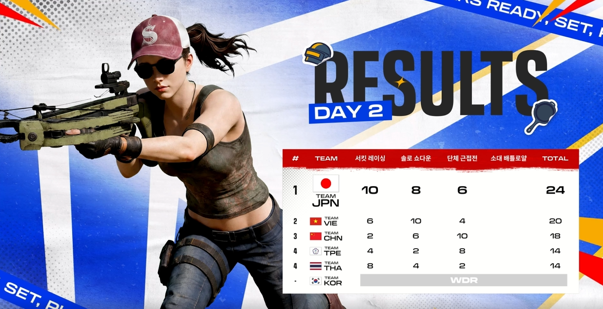
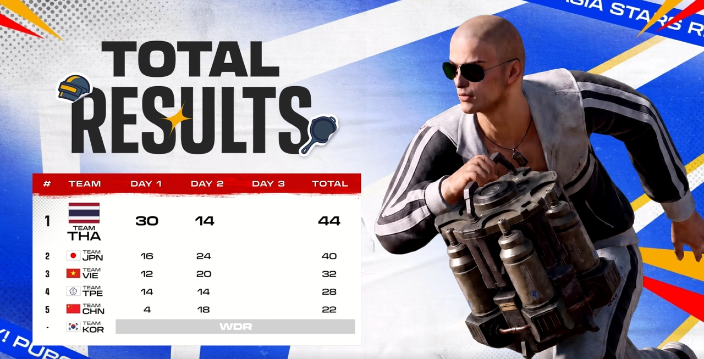

현역 프로선수 동원 + 부정행위 + 운영사의 쉴드까지 동원했음에도
개뚜려맞고 있는 大베트남.
밥상을 차려준게 아니라
아예 그냥 링거로 포도당 넣어주는데 그걸 못먹고있음.




현역 프로선수 동원 + 부정행위 + 운영사의 쉴드까지 동원했음에도
개뚜려맞고 있는 大베트남.
밥상을 차려준게 아니라
아예 그냥 링거로 포도당 넣어주는데 그걸 못먹고있음.
저긴 컴터도 없어서 프로들도 3060같은걸로 게임할듯
WDR 이 뭐임??
철회 또는 기권
ㄱㅅ
기권, 철회 라는 뜻.
Withdraw 줄여서 쓴듯
그짓을 해놓고도 3위냐
국가산업이 아웃소싱인 새끼들이 ㅋㅋㅋㅋㅋ
지들끼리 핵쓰고 지들끼리 방플하면서 하라고 해ㅋㅋ
선수가 리그 위에 있는거부터 리그 수준 나오는거지
배그가 뭔 대회 할만한 게임이냐 개어거지로 만든거 ㅋㅋ